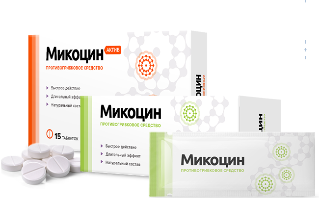

Может появится сильная реакция на не привычную пищу, одежду, средства гигиены
- №1 для избавления от любого типа грибка
- Рекомендован дерматологами
- 13000+ довольных клиентов за 2018 год
Комплексное избавление от грибка - изнутри и снаружы
- Комплекс Микоцин устраняет зуд, неприятный запах и возвращает эстетичный вид
- ТаблеткиМикоцин уничтожают все виды грибка на ногтях и коже
- ГельМикоцин восстанавливает кожу и создает на ней защитный барьер
Бесплатно
Успейте заказать со скидкой
Старая цена
918 ₽
Новая цена
459 ₽
Вашы данные защищены!

299 ₽
299 ₽
Грибок - это опасная инфекция
которая угрожает вам и вашим близким, ведь с каждым днем грибок приводит к:
После полного разрушения ногтя грибок распространняется на палец, что приводит к его ампутации
Может привести к повреждениям мозга, слепоте, отказу печени, почек и сердца
Статистика: каждые 60 секунд врачи диагностируют опасные поражения внутрених органов, вызваные грибком, у 1-го пациента
Почему большинство средств против грибка малоэффективны
Чудо-средства
Обещают, что избавят от грибка меньше, чем за месяц, хотя это невозможно.
Но
Ноготь - это розовой слой кожи.
Он не имеет живых клеток. Часть ногтя, которая уже поражена грибком, не сможет выздороветь до полного его отрастания.
Единственный способ вылечить грибок - подавлять его распостранение все время, пока ноготь не отрастет заново.
Для этого требуется 4-6 месяцев.
Наружные средства
Способны устранить внешние проявления грибка
(кремы, лаки, пластыри)
Но
Очаг заражения находится под
ногтевой пластиной, а наружные средства не способны его достичь - они действуют только не на верхнем слое ногтя,
поэтому не способны избавить от грибка. Для повышения их эффеткивности рекомендуется спиливать ноготь полностью,
но это больно, некрасиво и совершенно не дает гарантий выздровления.
Внутриние средства
Убивают грибковую инфекцию в организме.
(таблетки, саше, капли)
Но
Могут подествовать только при длительном
использовании (6-8 месяцев). За это время внутрение средства в 93% случаев наносят серьезный ущерб печени вызывают
сыпь, отеки диарею, рвоту. К тому же, каждое средство эффеткивно только против одной группы грибка из 4000 видов.
Даже если вы используете наружные и внутриние средства одновременно,
это не гарантирует избавления от грибка: они могут конфликтовать между собой по составу и блокировать действие друг друга или быть
неэффективными против вашего типа грибка.
Почему таблетки Микоцин от грибка так эффективны?
Другие средства не дают полную защиту от грибковых инфекций и могут быть опасны
Кремы и мази
Не лечат грибок, потому что не приникают в ногтевую пластину.
Только временно избавляют от симптомов инфекций. Могут вызывать сильную аллергию и раздражение на коже.
Народные методы
Помагают только в редких случаях. Могут причинить вред коже
и ногтям. Не предотвращают повторные заражения грибком.
Таблетки
Действуют против всех видов грибков. Быстро снимают неприятные
симптомы и уничтожают инфекцию изнутри вне зависимости от области заражения грибком. Надолго защищают от повторных заражений.
Зачем лечить сложное, дольше и дороже, если есть Микоцин?
Как применять Микоцин

- Принимать по одной таблетке утром и вечером
- Запивать стаканом воды
- Курс - от 30 дней